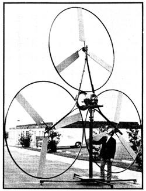

"We've eliminated the weather vane tail, expensive gearboxes and complicated feathering mechanisms needed by most windplants," says Edmund I. Salter. "That makes our unit simpler, quieter, and less expensive than other wind-driven generators."
Mr. Salter-a mechanical engineer and President of San Diego-based Wind Power Systems, Inc-.is talking about his firm's new development, the RD-7000 Wind Turbine. And, as his remarks indicate, the working prototype of the turbine is radically different from most wind-driven generators of the past and present.
The basic Salter unit (without tower) is 20 feet tall and consists of a central alternator driven by three three bladed propellers. The rotor blades are constructed of poly urethane foam over alloy steel spar tubes and weigh less than two pounds apiece. A circular steel rim around each tri-fanned rotor, it is claimed, "Improves efficiency as much as 20% by preventing air spillage at the blades' tips, adds strength and rigidity to the propeller, and-by pressing against a motorcycle wheel attached to the alternator's drive shaft automatically spins the generator five times as fast as the rotor turns."
The RD-7000 can produce 7,000 watts of 120-volt direct current in a 25 to 28 mph wind and a maximum of 10,000 watts when driven by an air mass moving 32 mph. Salter figures that one of the units, mounted on a tower at least 40 feet tall, will supply enough electricity to run a single family home in any location with a minimum average yearly wind velocity of eight miles per hour. Several of the generating units can be grouped on one or more larger towers to produce power for factories, subdivisions, and small towns.
"The real secret of this design," says Salter, "is its simplicity. The rotors run downwind of the machine's pivot point. That eliminates the need for a tail vane and cuts thirty to forty bucks off the cost of the windplant.
Our rim drive turns the generator 1,250 to 1,375 rpm in a 25 mph wind without costly gears. And the RD-7000's damping device which is no more complicated than a door closer just kind of lets the whole rig lay over further and further whenever the speed of the wind increases to a more and more dangerous level. This decreases the area of the rotors exposed to the gale in a very straight forward and inexpensive manner. It's ideas like these that should allow us to install our wind turbine-less batteries-at a price of about $450 per kilowatt."
Patents are pending on the RD-7000 and the prototype unit is still being tested. Which is to say that the Salter windplant probably won't be on the market for at least another two years. But that doesn't stop it from being a very interesting concept right now!.
|
 |
|
|